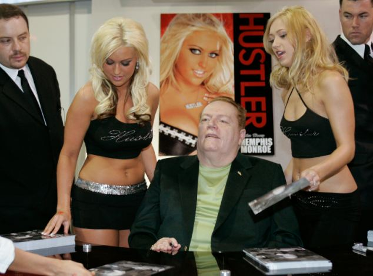

Larry King show
HOGYAN KEZELIK A MILLIÁRDOSOK AZ IMPOTENCIÁT
Az erektilis diszfunkció, vagyis a merevedési zavar olyan probléma, amely nem válogat a tehetősek között sem: vagy feláll, vagy nem. A pénz nem hat a pénisz működésére. Használhatja-e egy átlagos férfi a milliárdosok titkát, hogy kőkemény erekciója legyen?
”A szex egy remek tevékenység, még idős korban is. Saját magamon tapasztalom”, – Larry Flynt.

Larry Flynt, milliárdos, a Hustler pornóújság kiadója és korának legendája. Ezzel a kiadvánnyal vette kezdetét a szexuális forradalom Amerikában és Európában. Sztriptíz klub hálózatok, 5 feleség, és modellek vették körül – valóságos álom, nem igaz?
A Larry King show első ízben megy túl saját határain!
Itt az ideje, hogy a felszínre
kerüljenek a legintimebb kérdések!


– Larry, ön a pornóipar egyik botrányos hőse. Az ön magazinja, a Hustler valóságos áttörés volt! Nem egyszer került már bíróság elé erkölcsi kérdésekben, de mindig megúszta a felelősségre vonást. Hogyan sikerült mindezt elérnie?
– Mindig is úgy gondoltam, hogy a szex a világ legtermészetesebb dolga, és nincs miért titkolóznunk. Ugyan mi törvényellenes van a nemi vágyban? A bíróságon mindig is kiálltam a véleményemért. Az újságomat is a legkedveltebb tevékenységemnek szenteltem – a szexnek. Nem akartam irodában dolgozni, azt akartam csinálni, amit szeretek.

– Ötször házasodott, sérülést szenvedett, mozgásképtelenné vált, de ez sem tántorította el attól, hogy folytassa szerelmi életét. De most őszintén: ön az anyagi… méretei miatt olyan vonzó a lányoknak?
– Nem csak a pénztárcámmal büszkélkedhetek. Régebben folyamatosan részt vettem a lányok fotózásán, ami aztán bekerült az újságba. Szinte minden percében állt a cövek. Mindig arra gondoltam, milyen jó lenne eljátszadozni ezekkel a félmeztelen szépségekkel. Néha egy-egy forró nő kezét meg is kértem. De egyikük sem volt elég ahhoz, hogy teljes mértékig kielégítsék a vágyaimat.
– Azt akarja mondani, hogy az ők kevésbé voltak aktívak szexuálisan, mint ön?
– Igen, szó szerint majdhogynem ájulásig keféltem őket. Nem volt az a millió, ami együtt tartott volna minket. Nálam mindig minden a legmagasabb szinten volt, de azután, hogy egy sorozatgyilkos megsebesített, sajnos problémák adódtak a szexuális életemben.
Folyton műtétre kellett járnom, hogy helyreállítsam a péniszemet. Ez sok éven át zajlott. Idővel csak még több lett a kudarc: a sérülésem után csak 2-3-szori próbálkozásra állt fel, de az évek múltán ez is egyre kevésbé. Jobb esetben egy-másfél óra női izgatásra volt szükségem, hogy erekcióm legyen.

Volt egy eset: a forgatáson megtetszett egy modell, a szünet alatt felhívtam magamhoz az öltözőbe. Fél órán át próbáltam betenni neki, de sehogy sem akart felállni. Semmi nem lett belőle. Ez a kis ribanc meg kinevetett és azt mondta, hogy inkább maradjak a pénztárcámnál, azzal jobban ki tudnám elégíteni.
Ez nagyon szíven ütött engem. Hétvégén egy üzleti partneremmel elmentünk a város szélére iszogatni és elmeséltem neki a problémámat. Ő meg mondja nekem: az -et próbáltad már? Minden férfi ezt szedi. Ezen meg én röhögtem egy jót: nekem az orvosok se tudnak segíteni, te meg itt jössz a bogyóiddal. De arra gondoltam, mi van, ha tényleg használ?
– Mi sült ki a dologból?
– Úgy voltam vele, hogy ez lehet az utolsó esélyem. Felvettem a kapcsolatot az orvosommal, aki elküldte nekem a készítményen végzett kutatások eredményeit. Döbbenetes volt! A férfiak többsége örökre megszabadultak az impotenciától anélkül, hogy kárt tettek volna magukban és műtét sem kellett hozzá!
– Ez olyasmi, mint a Viagra?
– Dehogyis! Hülye voltam, és vettem Viagrát is. Este bevettem egy tablettát, de másnapra szörnyen fájt a péniszem, belázasodtam és pocsékul éreztem magam. Attól tartottam, hogy orvost kell hívnom. Persze állt, mint a cövek, de alig bírtam hozzá érni:annyira fájt.
– Mondana többet erről az -ről?
– Én csak elmesélem a történetemet, a többit ti magatok is tudjátok. Az -et a gyártó hivatalos weboldaláról rendeltem meg. Az első héten semmit nem tapasztaltam, de aztán egyik reggel arra ébredek, hogy kőkeményen áll! Mint fiatal koromban! Gyorsan fel is hívtam az egyik modell csajt. Szörnyen aggódtam, mi lesz, ha megint nem fog állni aktus közben? Jött is a két csaj, gondoltam, basszus, itt mindkettőt meg kell döngetni! Végül három órán át keféltünk, a csajok teljesen oda voltak az élvezettől! Még soha annyi sikoltozást és kiáltást nem hallottam!

– Van a készítménynek valamilyen mellékhatása?
– Egyáltalán nincs! Teljesen jól működik, én magam teszteltem le. Remek összetevői vannak, ezt minden orvos megerősíti. Az alkohol mellett is szedhető: semmiféle vegyszer nincs benne, kizárólag természetes anyagok. Ráadásul annyira jól vannak összeválogatva, hogy nem csak javítja az erekciót, hanem helyre is állítja. Még az ilyen kilátástalan helyzetben is, mint amiben én voltam.
– Ez fantasztikusan hangzik! És hol szerezhető be az ?
– Az -et jelenleg csak a hivatalos weboldalon lehet megvásárolni, ezért is ilyen alacsony az ára.
Ha az nekem használt, akkor másnak is fog, ebben egészen biztos vagyok. Hogy erről önök is meggyőződhessenek a gyakorlatban, elmondom, hogy 10000 csomagot kifizettem, hogy a nézők fele áron juthassanak hozzá.
– Ez igazán kedves tőled, Larry! Ezzel a kérdést kimerítettük és egyben interjúnk végéhez érkeztünk. Viszont látásra!